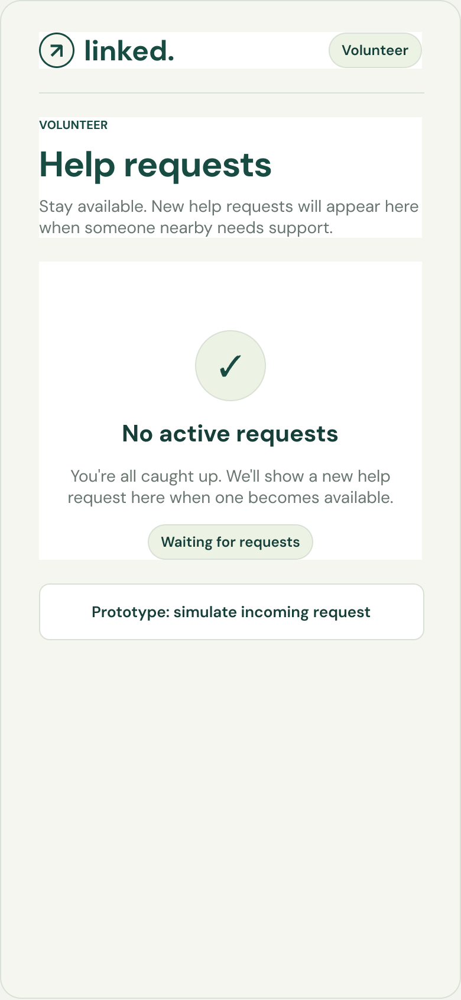
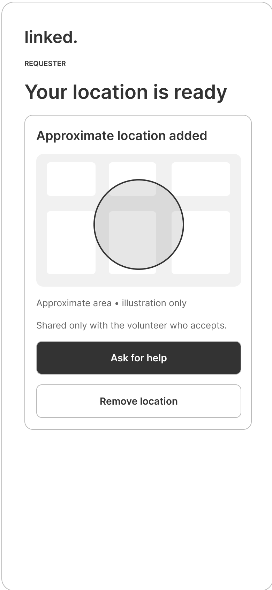
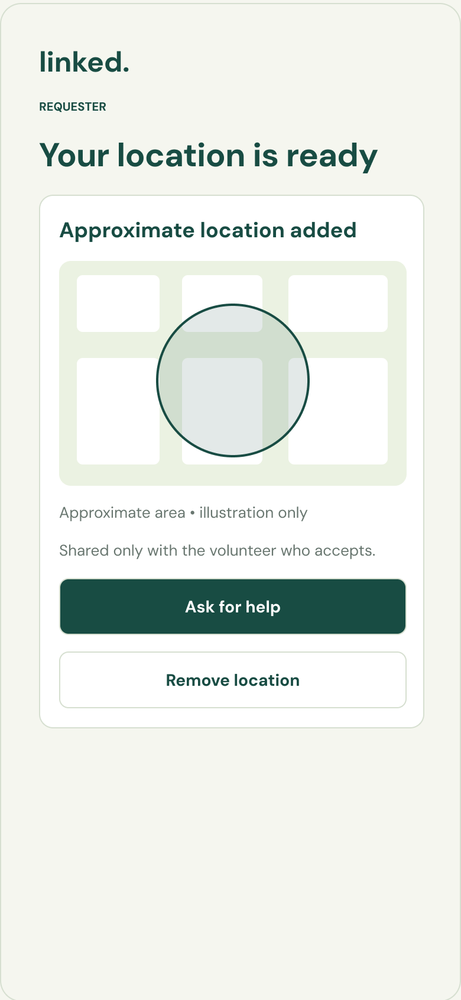

01 / US5
Volunteer alerts
Built the volunteer-facing request alert and inbox interface.
FONTYS FRONTEND DEVELOPMENT — SEMESTER 4
Client project · Studio Krom
STATUS: IN DEVELOPMENT
An ongoing Studio Krom client project exploring volunteer assistance during a night out in Eindhoven.
Team project. The designs and interactions shown are prototypes, not a deployed emergency service.

THE PROJECT
The case focuses on volunteer alerts, request acceptance and optional approximate location sharing.
SPRINT 2 — USER STORIES 5 & 6
Review the Figma volunteer flow and switch between low- and high-fidelity screens.
US5 · VOLUNTEER INBOX
The volunteer sees an empty request inbox while available. A new help request can appear here.
Authentic Figma exports · prototype only
01 / 04
High-fidelity prototype, stage 1 of 4: No active requests.

SPRINT 3 — USER STORY 10
US10 explores optional, approximate location sharing.


PRIVACY & INTERACTION DECISIONS
Sharing starts off; browser permission follows opt-in.
Coordinates are rounded to two decimals and shown as an approximate area.
Sharing is optional, visible after acceptance and removed if the request is canceled.
These are prototype behaviors and design decisions, not a claim of production-grade security or guaranteed anonymity.
MY INDIVIDUAL CONTRIBUTION
Linked is a team project. I implemented selected frontend user stories; the client-project source is not included here. The gallery above switches Figma screens and is not a live implementation.
01 / US5
Built the volunteer-facing request alert and inbox interface.
02 / US6
Implemented acceptance and status changes, local persistence and cross-tab updates in the client frontend.
03 / US10
Implemented opt-in browser geolocation, rounded coordinates, conditional visibility and location removal on cancellation.
PROJECT DEVELOPMENT
Completed prototype scope and upcoming work.
US5/US6 covers alerts, acceptance, status updates and requester confirmation in the Figma flow and coded prototype.
Explore the volunteer flowUS10 covers opt-in browser permission, approximate location, requests without location and removal on cancellation.
Explore the location decisionsFurther user stories will be added as the team progresses. No unfinished feature is shown as complete.